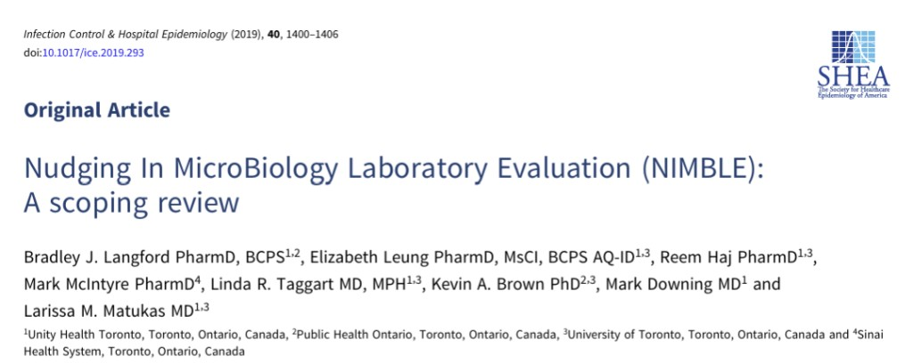
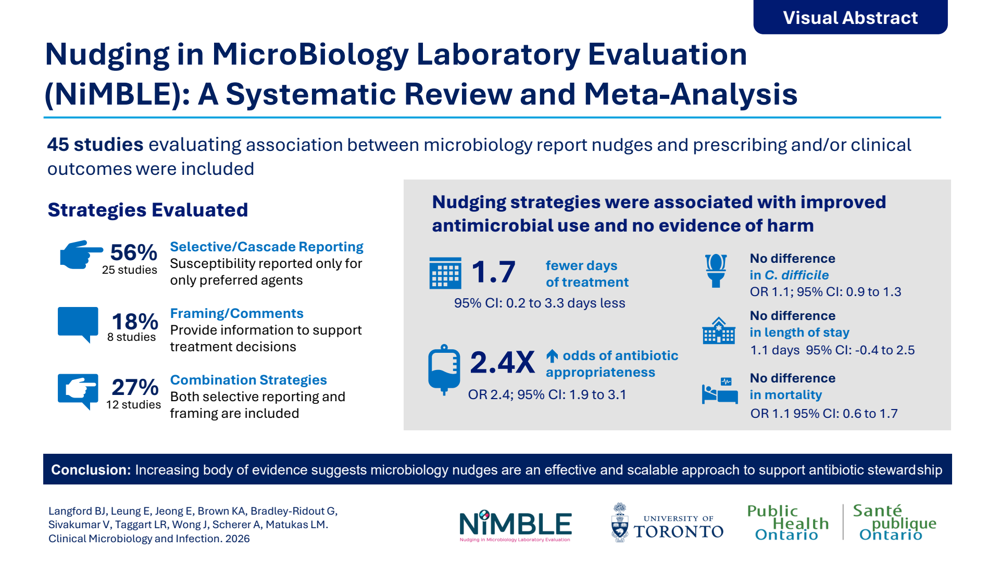

2019 · Scoping review

The NiMBLE Research Program studies how laboratories can change culture and susceptibility reports so that the easier antibiotic to pick is also the more appropriate one
Culture and susceptibility results already reach the bedside.
What is shown, in what order, and with which comment.
Prescribers keep autonomy. The easier pick is the better one.
Nudging in Microbiology Laboratory Evaluation (NiMBLE) is a collaborative program based in Ontario including clinicians and researchers from University of Toronto, McMaster University and several hospitals in the province. It asks a practical question: can the way a microbiology report is written change antibiotic decisions at the bedside?
The microbiology laboratory is an important partner for antimicrobial stewardship programs. Many organizations encourage some form of selective or cascade reporting of susceptibility results. What they do not fully specify is which agents to show, in which clinical situations, and how to present them so that clinicians still have autonomy when a broader drug is needed.
“A nudge… is any aspect of the choice architecture that alters people’s behavior in a predictable way without forbidding any options or significantly changing their economic incentives.” Thaler RH, Sunstein CR. Nudge. Yale University Press; 2008.
NiMBLE maps those reporting choices, measures their effect on prescribing and clinical outcomes, and is now testing which formats work in which scenarios — and how clinicians actually read a nudged report. The program is supported by the AFP Innovation Fund, with collaborators across AMMI Canada’s Clinical Research Network and the Toronto Antimicrobial Resistance Research Network (TARRN).
Following Katchanov and colleagues, NiMBLE treats the susceptibility report itself as the intervention. Switch formats to see an example of how a midstream urine growing E. coli can be reported. This vignette is the one used in the program’s survey of prescribers.
When treating patients with lower urinary tract infection, the use of nitrofurantoin or trimethoprim-sulfamethoxazole is preferred.
| Antimicrobial | Interp. |
|---|
Two evidence synthesis initiated the program. The 2019 scoping review asked what had been tried. The 2026 systematic review and meta-analysis asked whether it works, and whether it harms.
2019 · Scoping review

2026 · Systematic review and meta-analysis

Podcast and press on NiMBLE and the laboratory as a stewardship partner.
2019 · ICHE Podcast
Bradley Langford on the NiMBLE scoping review: how susceptibility reports can nudge antimicrobial prescribing while preserving clinician autonomy.
Listen on SoundCloud2016 · The Pathologist
Brad Langford and Larissa Matukas on selective ciprofloxacin reporting, collaboration between laboratory and stewardship teams, and why a nudge still leaves the choice with the prescriber.
Read the articleThe syntheses show that reporting changes can work. They do not yet say which format is best in which clinical scenario, how clinicians experience a nudged report, or whether the effect holds in a prospective trial.
Prescribers are shown the same case, for example, initiation of therapy for E. coli in urine, with default, selective, framing, or eye-level reports. This randomized vignette study will compare different types of nudges in different contexts, including initiation, escalation, de-escalation of antibiotic therapy.
Focus-group interviews ask how clinicians notice, interpret, and act on a microbiology nudge. The aim is not only to describe decision-making, but to use those accounts to design a reporting intervention that people will trust and use, including when a suppressed agent is the right one.
Both NiMBLE reviews identify the same limitations: most evidence is uncontrolled before-and-after work. Community and hospital prospective trials are being planned to test whether a designed nudge, informed by the vignette and qualitative findings, changes prescribing, with patient outcomes and unintended consequences as balancing measures.